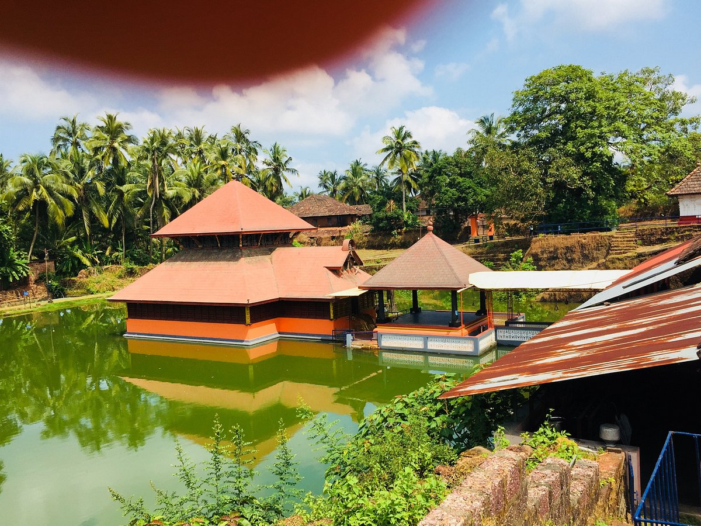
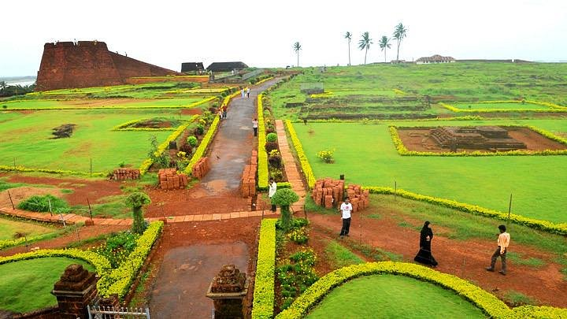
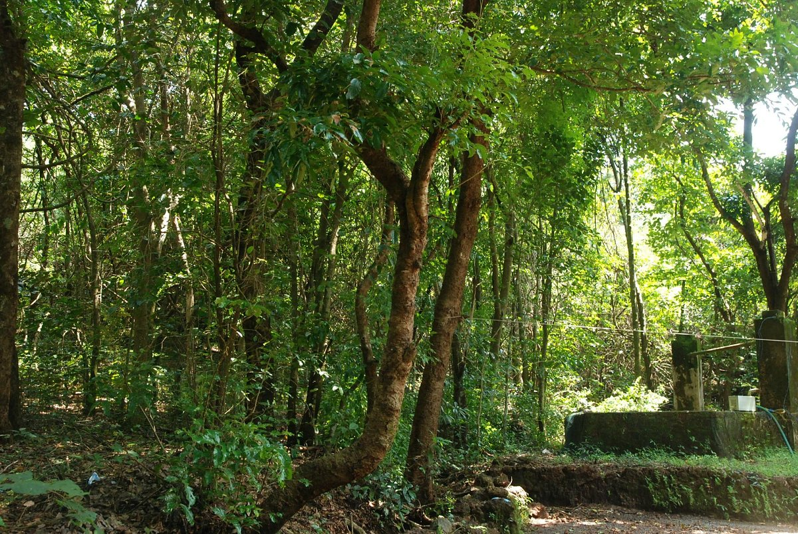
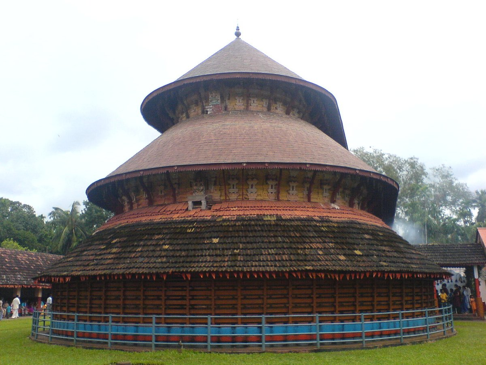

Kasaragod district is one of the 14 districts in the southern Indian state of Kerala. It is the northernmost district of Kerala. Kasaragod was a part of the South Canara district of the erstwhile Madras Presidency. It then became a part of the Kannur district of Kerala. Kasaragod was declared as a district on 24 May 1984.Kasaragod is home to several forts which include Arikady fort, Bekal Fort, Chandragiri Fort, and Hosdurg Fort. Bekal Fort is also the largest fort in Kerala. Talakaveri, which is home to Talakaveri Wildlife Sanctuary where the 805 km long Kaveri river originates
Tourist attraction in Kasaragod!
Ananthapura Lake Temple

Ananthapadmanabhaswamy Temple or Ananthapura Lake Temple is a Hindu temple built in the middle of a lake in the little village of Ananthapura, around 6 km from the town of Kumbla in Manjeshwaram Taluk of Kasaragod District of Kerala, South India. This is the only lake temple in Kerala and is believed to be the original seat (Moolasthanam) of Ananthapadmanabha Swami (Padmanabhaswamy temple) Thiruvananthapuram. Legend has it that this is the original site where Ananthapadmanabha settled down
Bekal Fort

Bekal Fort is a medieval fort built by Shivappa Nayaka of Keladi in 1650 AD, at Bekal. It is the largest fort in Kerala, spreading over 40 acres (160,000 m2)..
The fort appears to emerge from the sea. Almost three-quarters of its exterior is in contact with water. Bekal fort was not an administrative centre and does not include any palaces or mansions.
An important feature is the water-tank, magazine and the flight of steps leading to an observation tower built by Tipu Sultan.[1] Standing at the centre of the fort, this offers views of the coastline and the towns of Kanhangad, Pallikkara, Bekal, Mavval, Kottikkulam, and Uduma.
Kareem's forest park

The only man-made forest in the Kerala Kareem Forest park is spread over 32 acres of land. The park is situated at Puliyamkulam, near Parappa which is 23 km away east of kanhangad town. Kareem, a native of Kasaragod, is behind this great green venture.Kareem’s Manmade Forest – from dry to lush greenery
Initially, his decision to buy the land made him a laughing stock in the region. People thought he had lost his mind and tagged him to be “crazy”! Kareem was unaffected by any such actions and focused on his work. He soon started planting saplings of wild trees in the place. But this task would demand every drop of his sweat as he was dealing with a land filled with laterite stones and barren unnourished soil.
Madhur Temple

Madhur Sree Madanantheshwara-Siddhivinayaka Temple
is a popular Shiva and Ganapathi temple located 7 km (4.3 mi) from Kasaragod town, on the banks of Mogral river, locally known as Madhuvahini.[1] Though the main deity of this temple is Lord Shiva known as Madanantheshwara, meaning the god who killed Kama, the god of desires, more importance is given to Lord Ganapathi, who is installed facing south in the main sanctum itself. Priests of this temple belong to the Shivalli Brahmin community. Kashi Vishwanatha, Dharmasastha, Subrahmanya, Durga Parameshwari, Veerabhadra and Gulika are the sub-deities of this temple. There is also presence of Goddess Parvati inside the main sanctum.
Ranipuram Hill Station
RANIPURAM Formerly known as Madathumala. About 48 KMs east of Kanhangad. Lying 780 meters above sea level. In beauty and boundary of nature comparable to Ooty. An ideal place for trekking. Once known as Madathumala, it borders Karnataka and boasts of some of the best trekking trails in the area. Regular buses are available on this route and jeep rides are another favourite among all our visitors.The versatile vegetation that includes evergreen shola woods, monsoon forests and grasslands make it a good place to relax and take some time off from the rigors of daily life.